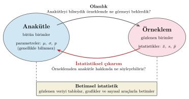
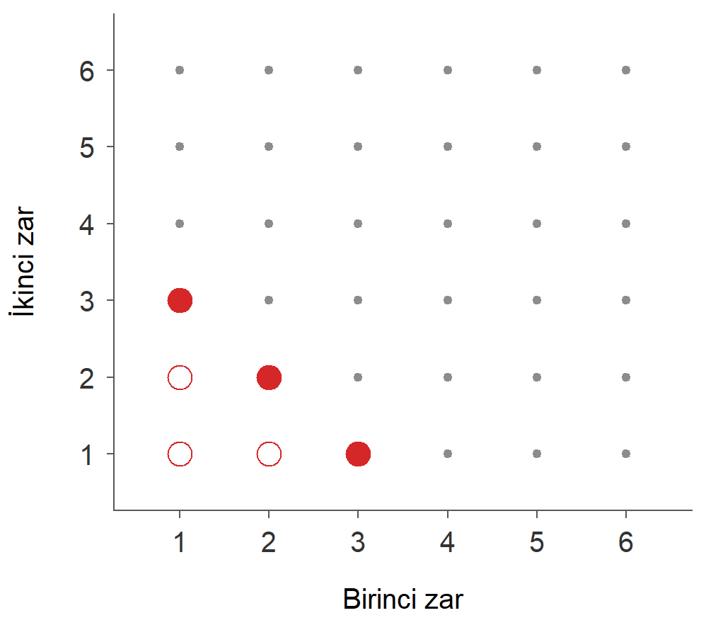
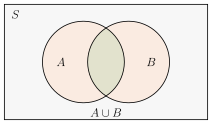
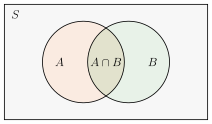
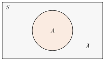
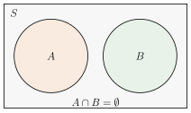
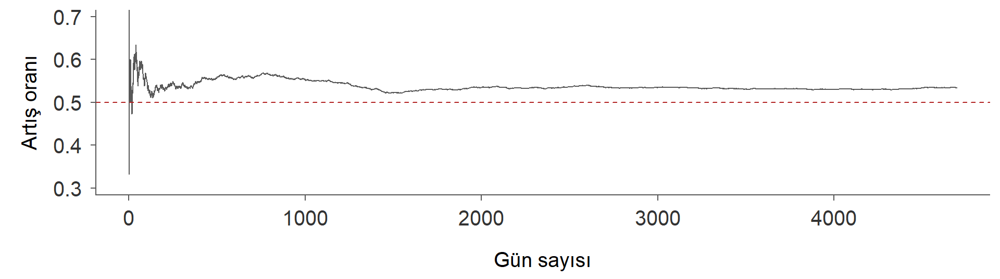
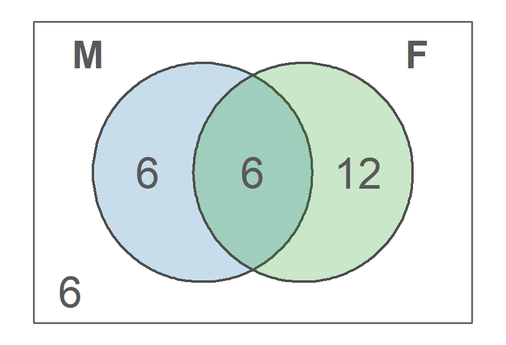
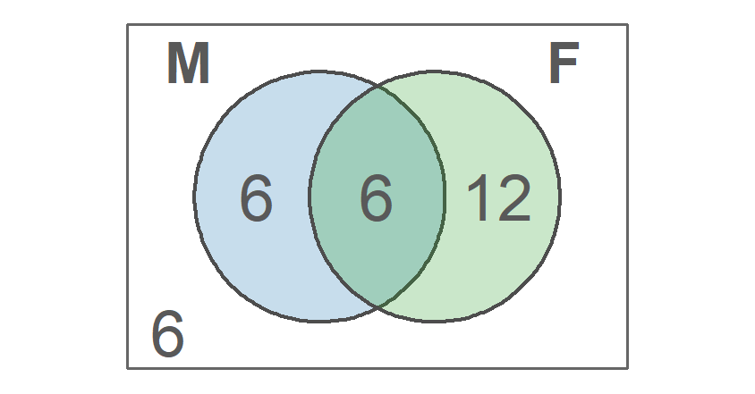

İstatistik I · 4. Ders · 22 Ekim 2026
Yıldız Teknik Üniversitesi, İktisat Bölümü
📖 Kitap: Bölüm 7 · Olasılık

| Deney | Örneklem uzayı | Bir olay |
|---|---|---|
| Para atmak | Tura: | |
| Zar atmak | Çift gelmesi: | |
| İki para atmak | En az bir yazı: | |
| Borsanın günlük yönü | Artışla kapanış: |

, ve kaç sonuç içerir?

Birleşim
ya da (ya da ikisi)

Kesişim
ve birlikte

Tümleyen
gerçekleşmez

Ayrık olaylar
Ayrık (karşılıklı bağdaşmaz) olaylar: ortak sonucu yok, kesişimleri boş küme. Bütünü kapsayıcı olaylar: birleşimleri örneklem uzayının tamamı. İki özellik ayrıdır; ikisi birlikte sağlanırsa olaylar örneklem uzayını parçalara ayırır: zarın tek ya da çift gelmesi gibi.
: olayının olasılığı,
Klasik
Bütün temel sonuçlar eşit olasılıklı ise Zar, para, kart destesi
Göreli sıklık
Deney çok kez tekrarlanırsa Sigorta, kalite kontrol, geçmiş veri
Öznel
Bir olayın gerçekleşmesine ilişkin inanç derecesi; kişinin bilgisine göre değişebilir
Bir maçın sonucu, yarın borsanın yönü, yarın yağmur yağması
Üç yaklaşım da aynı matematiksel kurallara uyar.
(a) :
(b) : 8 eşit olasılıklı sonuç
:
yalnızca sonuçlar eşit olasılıklıysa geçerlidir
“Borsa ya artar ya azalır, o hâlde artma olasılığı 1/2” demek yanlıştır: iki sonuç eşit olasılıklı değildir.
İki zarın toplamı 11 değer alır: 2, 3, …, 12. Bu 11 sonuç eşit olasılıklı mıdır?
Eşit olasılıklı olan 36 sıralı sonuçtur, 11 toplam değil. Turuncu kesikli çizgi 11 toplamı eşit olasılıklı sayan yanlış hesabı (1/11) gösterir.

BIST100, 2003-2021, 4695 gün: günlerin yaklaşık %53’ü artışla (ya da değişmeden) kapanmış.
Yarın borsanın artışla kapanma olasılığı %53 müdür?
örneklem uzayında ayrık ve bütünü kapsayıcı temel sonuçlar olsun.
Tümleyen kuralı:
“En az bir” türündeki soruları çoğu zaman tümleyenden çözmek daha kolaydır: .
Her ve olayı için
Kesişim iki kez sayıldığı için bir kez çıkarılır.
Ayrık olaylarda :
30 öğrenciden 12’si matematik (), 18’i fizik () dersine kayıtlı; 6’sı her ikisine de kayıtlı.
Rassal seçilen bir öğrencinin

(a) · (b) yalnız : , yalnız : , toplam · (c)
Ders kayıtları örneğindeki 30 öğrenci dört gruba ayrılır:

| Toplam | |||
|---|---|---|---|
| 6 | 6 | 12 | |
| 12 | 6 | 18 | |
| Toplam | 18 | 12 | 30 |
Türkiye’de kan grubu sıklıkları (%):
| O+ | A+ | B+ | AB+ | O− | A− | B− | AB− |
|---|---|---|---|---|---|---|---|
| 29.8 | 37.8 | 14.2 | 7.2 | 3.9 | 4.7 | 1.6 | 0.8 |
Rassal seçilen birinin kan grubunun O+ ya da A+ olma olasılığı nedir? Rh negatif olma olasılığı nedir?
| Kural | İfadesi | Ne zaman kullanılır |
|---|---|---|
| Klasik yaklaşım | Temel sonuçlar eşit olasılıklıysa | |
| Tümleyen kuralı | Tümleyeni hesaplamak daha kolaysa, örneğin “en az bir” | |
| Toplama kuralı | İki olaydan en az birinin gerçekleşmesi aranıyorsa | |
| Ayrık olaylarda toplama | Olaylar birlikte gerçekleşemiyorsa | |
| Olayı parçalara ayırma | Yalnız ’nın gerçekleşmesi aranıyorsa | |
| Hiçbiri | İki olaydan hiçbirinin gerçekleşmemesi aranıyorsa |
Olasılıkların çarpım kuralı koşullu olasılıkla birlikte gelecek derste.
Klasik yaklaşımda . Sonuçları tek tek yazmak çoğu zaman imkânsızdır; saymak gerekir.
Çarpım kuralı: bir işin , ikinci bir işin yolu varsa ikisini birlikte yapmanın yolu vardır.
5 kişi 5 sandalyeye kaç farklı biçimde oturabilir?
nesneden tanesini sırayla ve yerine koymadan seçmek, permütasyon:
10 aday arasından bir başkan ve bir başkan yardımcısı kaç farklı biçimde seçilebilir?
(Ali başkan, Ayşe yardımcı ≠ Ayşe başkan, Ali yardımcı)
nesneden tanesini sıra önemsiz ve yerine koymadan seçmek:
| Yerine koyarak | Yerine koymadan | |
|---|---|---|
| Sıra önemli | ||
| Sıra önemsiz | — |
6 erkek ve 4 kadın aday arasından 3 kişilik bir kurul rassal olarak seçiliyor.
Bütün seçimler:
Hilesiz bir para 10 kez atılıyor. Tam 4 tura gelme olasılığı nedir?
Tura olasılığı ise: . Bu formülü binom dağılımı adıyla Kesikli Rassal Değişkenler konusunda yeniden göreceğiz.
Bir sınıfta öğrenci var. En az iki öğrencinin doğum gününün aynı olma olasılığı nedir? (365 gün, eşit olasılıklı)
Tümleyenden: hiç eşleşme olmaması için ikinci öğrencinin 364, üçüncünün 363, … günü kalır:
Olasılığın %50’yi aşması için sınıfta kaç kişi olmalı? Önce tahmin edin.
Tatil (29 Ekim). Sonraki ders 5 Kasım: Olasılık II, koşullu olasılık, Bayes teoremi, birleşik olasılıklar ve çapraz tablolar
İstatistik I · YTÜ İktisat Bölümü